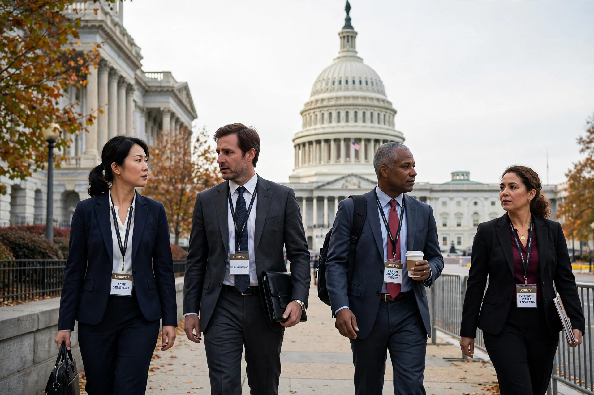

Lobbying in the United States

Lobbying in the United States is the practice of attempting to influence the decisions of government officials — principally members of Congress and their staff, executive-branch officials and regulators — on behalf of an individual, company, trade association, union, advocacy group or other interest. The term derives from the lobbies and corridors of legislative buildings where petitioners waited to speak to lawmakers, and the activity itself draws constitutional protection from the First Amendment's guarantees of free speech and the right "to petition the Government for a redress of grievances". Total reported spending on federal lobbying runs to roughly four billion dollars a year, and the largest spenders are typically major corporations and associations in healthcare, finance, energy and technology.
Legal framework
The Lobbying Disclosure Act of 1995 (LDA), substantially amended by the Honest Leadership and Open Government Act of 2007 (HLOGA), requires lobbyists who spend more than a threshold portion of their time lobbying for a client and meet income or expenditure thresholds to register with the Secretary of the Senate and the Clerk of the House and to file quarterly reports disclosing their clients, issues and income. HLOGA added gift and travel restrictions, disclosure of campaign contributions bundled by lobbyists, and "cooling-off" periods barring former members of Congress and senior staff from lobbying their former institutions — one year for House members, two years for senators and senior officials, with parallel restrictions on executive-branch appointees under ethics pledges. Lobbying on behalf of foreign governments and principals is separately regulated by the Foreign Agents Registration Act of 1938 (FARA), whose enforcement intensified in the late 2010s. Most states have their own registration and disclosure laws, and the majority of spending and activity occurs at the state and local levels as well.
Activities and techniques
Professional lobbyists — many of them former members of Congress, congressional staff or officials ("revolving door" lobbyists) — provide clients with intelligence about pending legislation, draft amendments and bill language, arrange meetings and testimony, build coalitions, and mobilise grassroots campaigns ("astroturfing" when manufactured to appear spontaneous). Campaign finance interacts closely with lobbying: political action committees affiliated with employers and associations contribute to candidates, though direct corporate contributions to federal candidates are prohibited.
Debate
Defenders describe lobbying as an essential channel through which dispersed knowledge and affected interests reach policymakers; critics argue that expenditure is so unevenly distributed — business interests vastly outspend public-interest and diffuse groups — that lobbying distorts democratic equality and produces policy biased towards wealthy interests, a line of research popularised by scholars such as Lee Drutman (The Business of America Is Lobbying, 2015) and by studies of responsiveness showing policy outcomes tracking the preferences of affluent Americans.